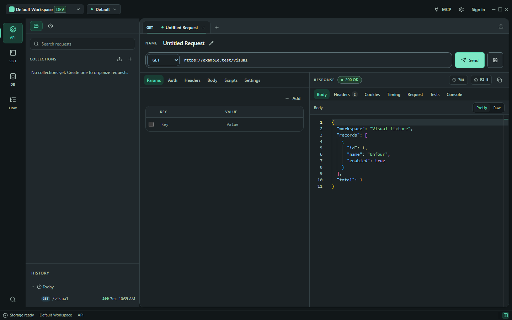
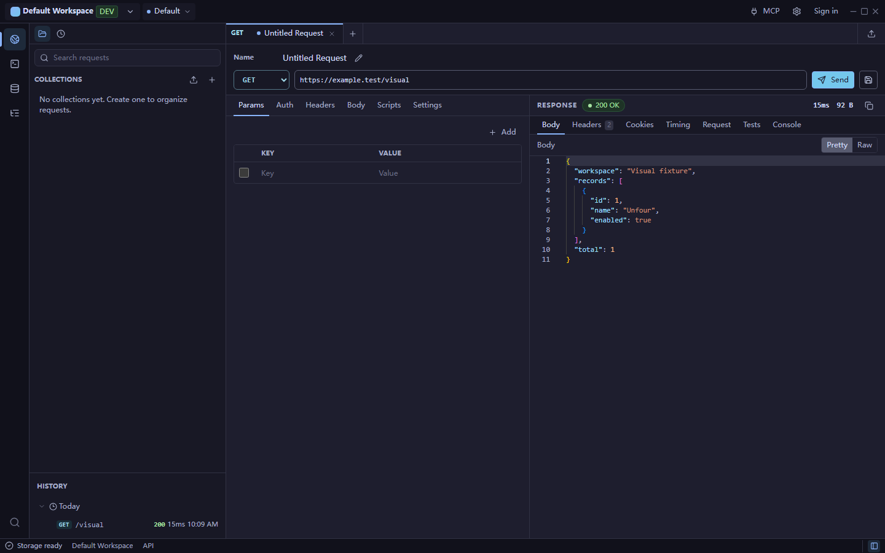
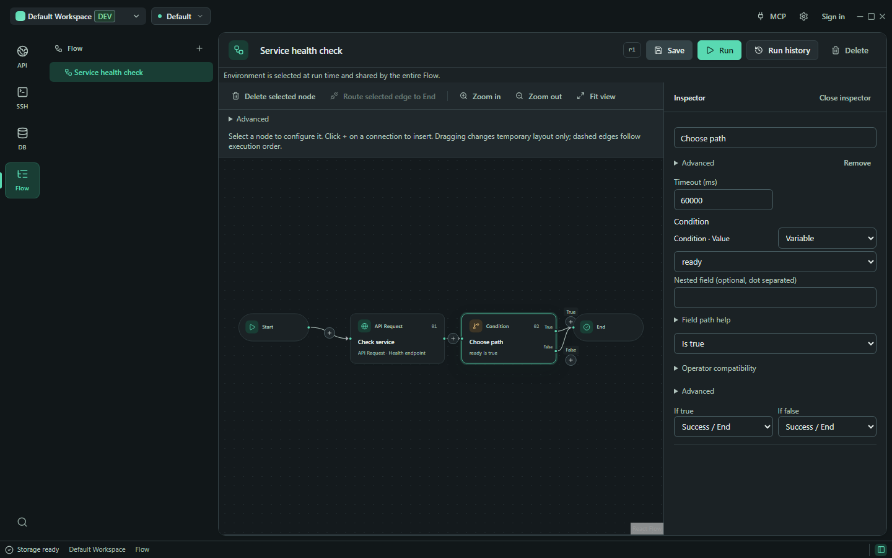
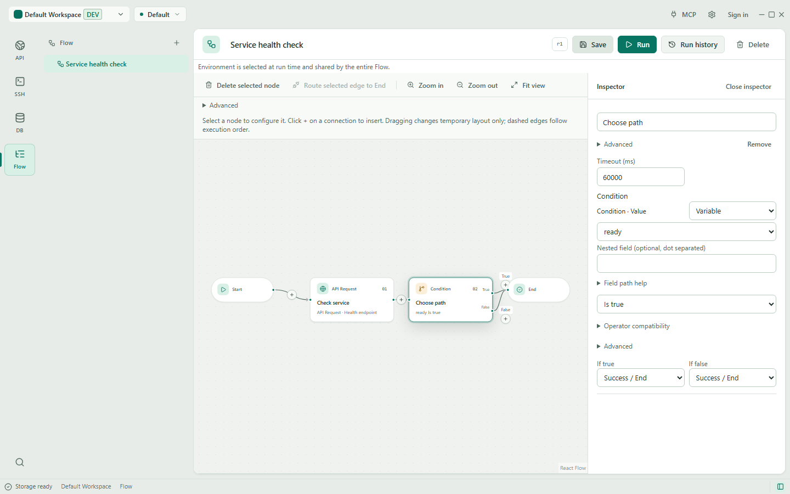
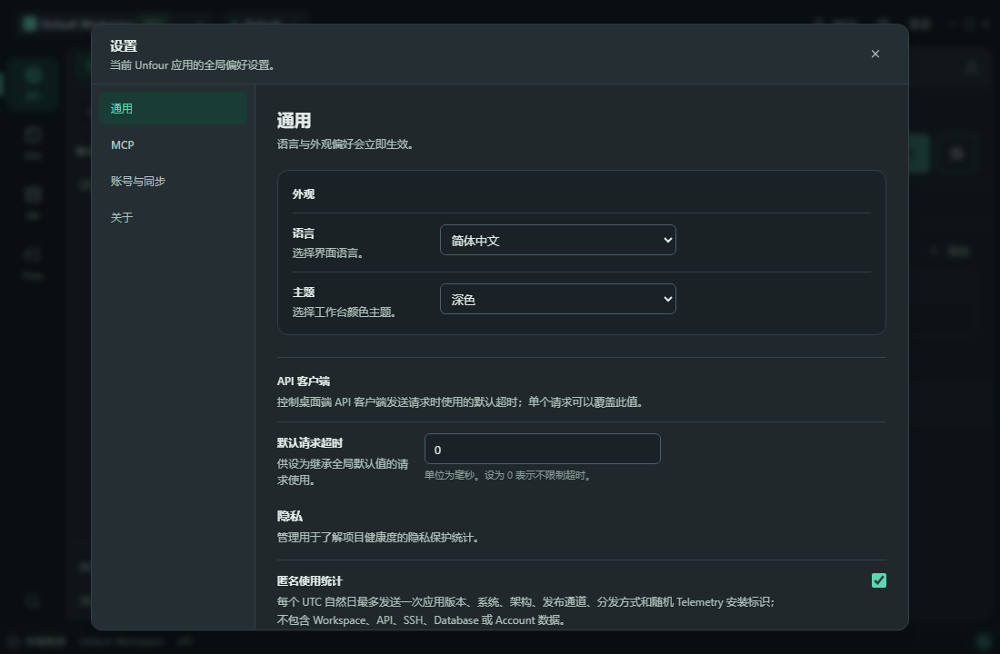
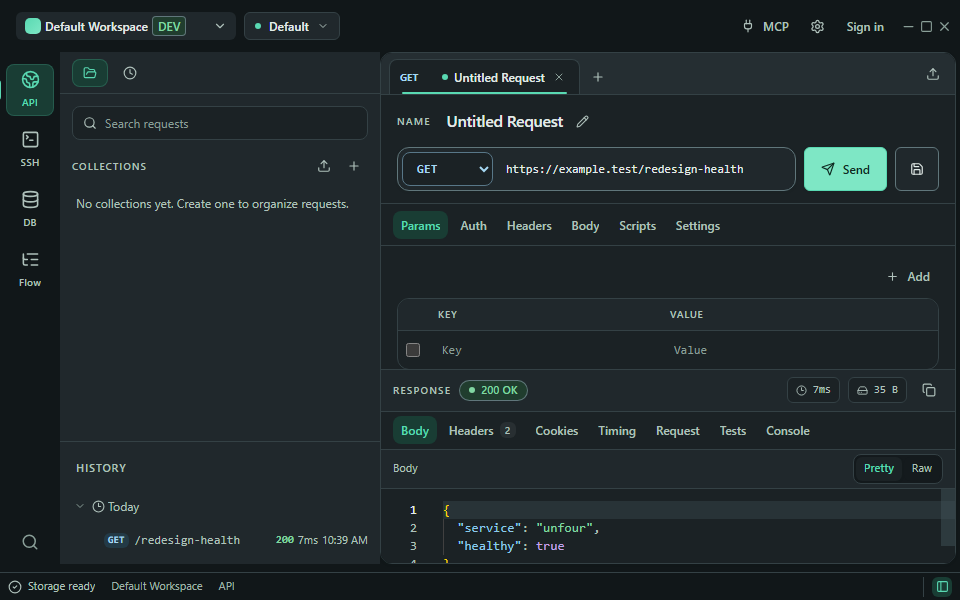
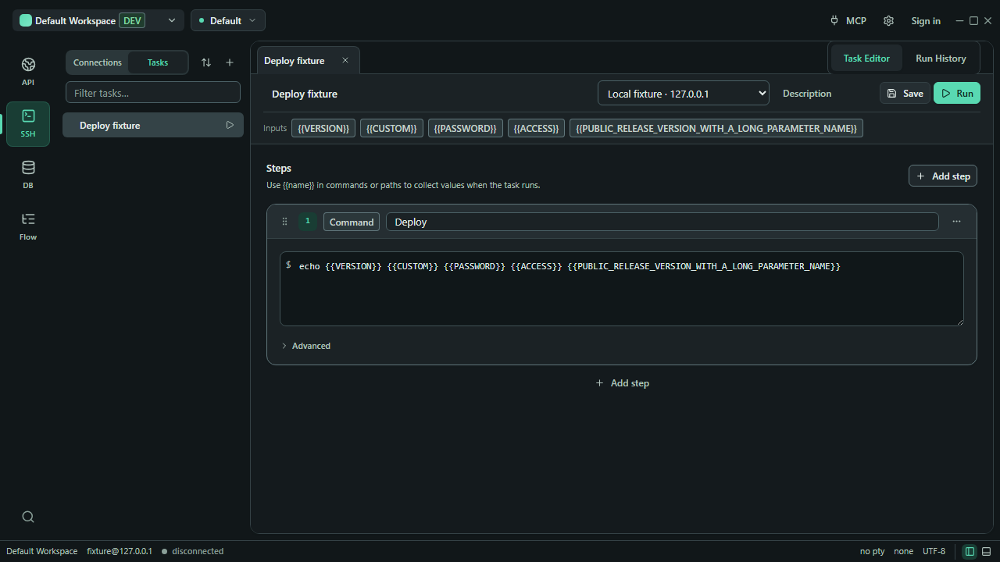
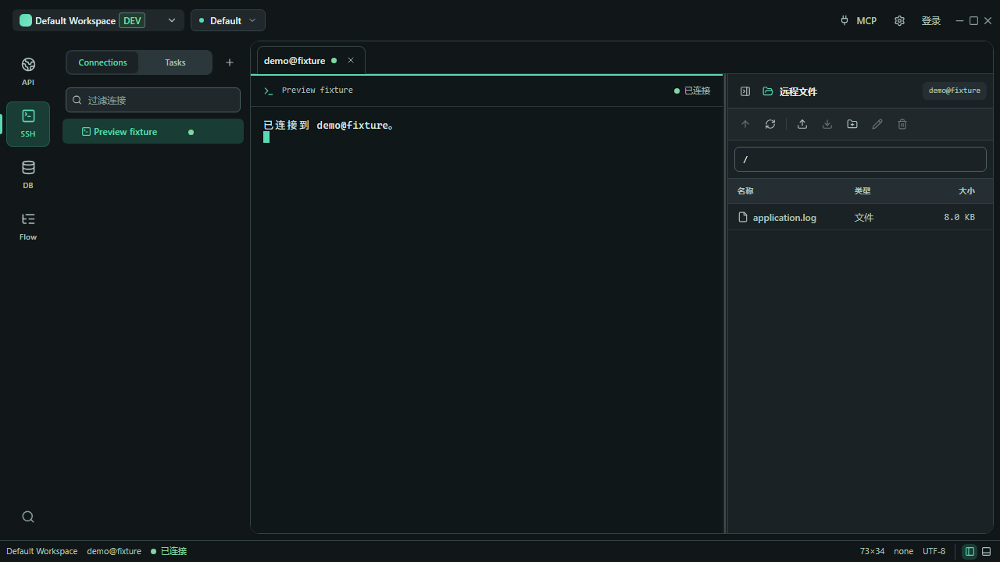

当前版本保留打包后的 U 应用主图标，移除四格品牌标记；界面内部图标、配色与布局继续采用新设计。截图来自隔离浏览器测试，不代表原生 SSH、数据库或 Tauri 集成验证。


API、Database、SSH 对照均为相同测试状态与 1440×900 视口；Flow 对照为相同的 1280×720 编辑测试。动态耗时、终端 resize 文本可能不同。下方补充完整 Flow、中文设置和窄窗口界面。





